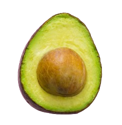

Guacamole (clásico)
"Existe un condimento que no puede faltar en toda mesa mexicana. Algunos
lo consideran una salsa, otros un aderezo, algunos incluso le llaman
ensalada, otros simplemente le llaman por su nombre propio: Guacamole."
Aunque el guacamole se prepara de diferentes formas según la zona de la que
provenga la receta, la base suele ser la misma. Aquí te mostramos una receta
muy completa para preparar esta conocida salsa mexicana:
Ingredientes
- 4 o 5 aguacates maduros
- 1 cebolla mediana (normal)
- 1 tomate mediano
- 1 chile serrano (o un jalapeño en conserva)
- Zumo de 1/2 lima o limón
- 1 manojo de cilantro fresco
- Sal
Instrucciones
- Lavar bien el tomate y el manojo de cilantro
- Pelar la cebolla y quitarle la capa exterior
- Trozar la cebolla y el tomate en trozos muy pequeños
- Picar las hojas de cilantro lo más fino posible, desechando los tallos
- Poner todos los ingredientes en un recipiente, preferentemente un molcajete
- Cortar por la mitad los aguacates, retirando el hueso
- Sacar toda la pulpa posible de los aguacates y ponerla en el molcajete
- Añadir el zumo de 1/2 lima con una pizca de sal
- Añadir un chile serrano muy bien picadito
- Machacar todos los ingredientes en el molcajete
En caso de no contar con un molcajete, se puede utilizar un tenedor
procurando que la pulpa del aguacate se mezcle con los demás ingredientes.
Debe quedarnos un guacamole con los trozos visibles, pero opcionalmente
puede pasarse por la batidora para dejarlo más cremoso y con una textura
más uniforme.
Bajito y Despacito
Esta semana estamos extremadamente emocionados por presentar una nueva técnica de cocina llamada
sous vide. Con la técnica sous vide, tú sumerges un recipiente (generalmente de plástico
sellado al vacío) en un baño de agua que precisamente se adapta a la temperatura requerida para que la comida sea
cocinada. En este programa, Cocina para Geeks, Jaime Potter describe la técnica como
poción mágica a temperatura ultra baja
.
La siguiente semana, prepararemos Salmon Sous Vide con Eneldo Holandés.
Para asistir al programa, contáctanos antes del 30 de Noviembre.
registro@masterchef.com
552-336-1800
Advertencia: El salmón cocinado a la sous vide no está pasteurizado. Evítalo si se está embarazada o se tiene problemas de alergia e inmunidad.